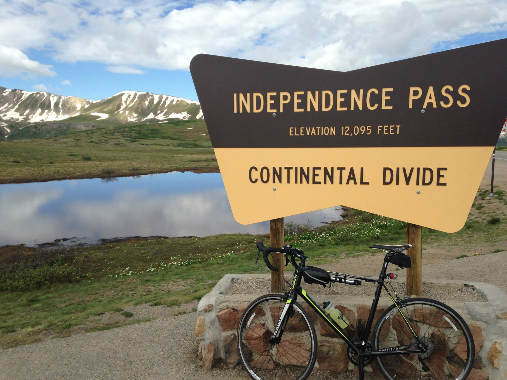
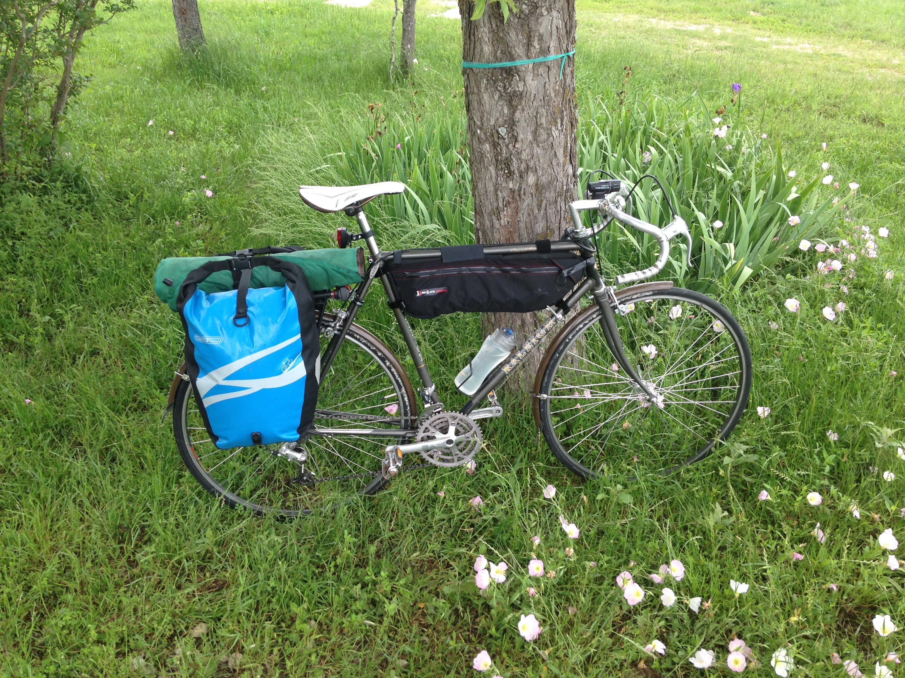
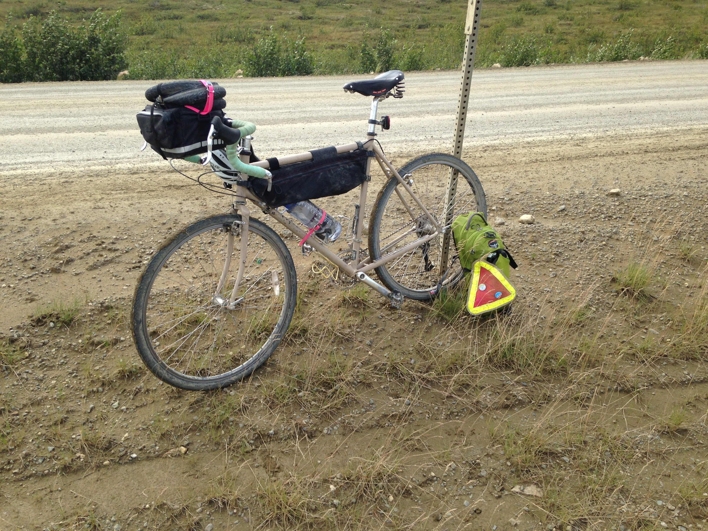

A 1976 Schwinn Continental (not pictured). Robins egg blue, and my first bike I owned as an adult. I got this bike through the earn-a-bike program at the Durham Bike Co-op in 2013. I fixed up the hubs which were in desperate need of an overhaul, and redid all the brake and shifting cables. Additionally the cranks were stripped so it was my first experience using a tap. This bike had many more problems, but at that time my mechanic skills were enough to get it to a ridable state, albeit one that needed a good deal more work. I gave this bike to my brother after graduating and it has since disappeared into that abyss all bikes abandoned on a college campus go.
A 2014 Giant Defy (3). Got this bike in 2014 for my summer cycling across the country with Bike & Build so it is chock full of memories and has experienced the prettiest scenery. My first (and most likely will remain my only) brand new bike. This is my fastest and sportiest bike, but I don't put on the lycra very often so it spends most of its time indoors. If I want to go on a longer ride that does not involve camping this is my go to.
A 1983 Raleigh Grand Prix (rhymes!). Got this bike in 2015 in Austin through the Yellow Bike Project's earn a bike program (much more time intensive than the Durham Co-op one). I learned so much putting this bike together; it was almost nothing more than a frame when I picked it out of the trailer. This was my main commuter for several years until it was stolen from my apartment building in 2018 (PSA - no matter how crime free you think your location is, a cable lock is not enough (PSA2 - write down and keep track of your bicycle's serial number)).
A 2010 Surly Long Haul Trucker. I got this bike in 2016 in Austin off of craigslist. The bike was in a sorry state and very much in need of repairs. I was able to take it on a short tour in Alaska along the Dalton Highway right before starting grad school where I joined PRO8000 for the beginning of their tour (they continued on to Key West, FL!). This bike was meant to be my touring bike, but is currently a commuter and guest bike.